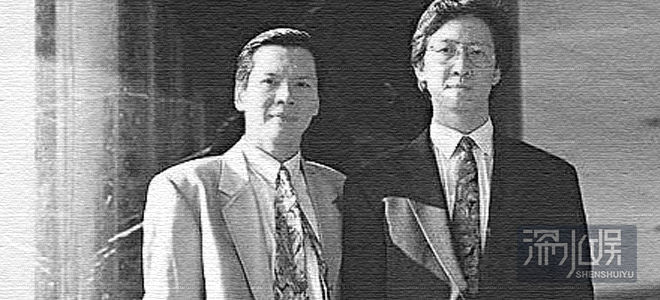
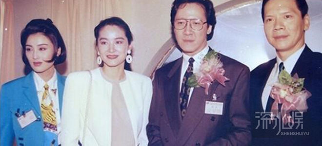
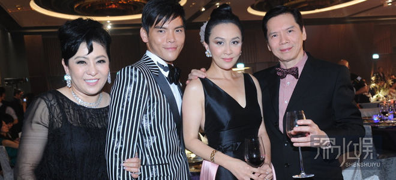

2014年11月20日，向华胜病逝，因为他与哥哥向华强的“灰色身份”，再度引发香港娱乐圈涉黑话题的讨论（前一次是在两个月前向华强太太讨伐周星驰时） 。这对娱乐圈大亨兄弟，作为黑帮社团创始人之子，早就被口诛笔伐八得底掉。那么，真实的香港娱乐圈黑势力究竟有多强大？网易娱乐采访多位香港资深记者和知情人士，回忆和独家披露黑社会对香港娱乐圈的影响。

向氏兄弟被非议的背景源于父辈，由于网络爆料贴层出不穷，现在几乎众所周知，出于表达的便利，略述一二。向氏兄弟父亲名向前，曾为中华民国军统局的少将（据说是后来香港另一大帮派“14K”创始人葛肇煌的下属），被视为香港黑帮组织“新义安”的创办人。1953年，向前因为政治问题被港英政府递解出境，出走台湾。向前共有十三个儿子，其中老二向华炎和老七向华波（后脱离，也进入娱乐圈，但发展平平）在父亲走后接掌新义安社团，之后，新义安变成世袭制，尊向氏为“龙头老大”。

老爸是社团创始人，哥哥是继任“龙头”，后来投身演艺圈的十子向华强和老幺向华胜自然也多少带些“江湖气”。据知情人向网易娱乐透露，读书时代，两人就曾因涉盗窃案被捕，不过后来找了一个同学顶罪而成功脱身。目前，向华强除了涉足电影、赌博、赌船外，还投资地产事业。向华强育有1女2子，长女向咏恒是和前妻、李小龙绯闻女友丁佩所生。据悉丁佩有台湾军方背景。两个儿子（向佐、向佑）均是现妻、在香港有“大姐大”之称的陈岚所生。作为电影公司老板的向华强，除了做投资人，还爱当演员，他在《赌神》系列和《赌侠》中饰演高手“龙五”广为人知，1992年，他还在刘国昌执导的《蓝江传之反飞组风云》，饰演探长蓝江，于1993年凭借该电影获得了第12届金像奖最佳男主角奖提名。据说，向华强自己希望当警察，但因为出身问题而没能如愿，所以就在电影里演警察过过瘾。